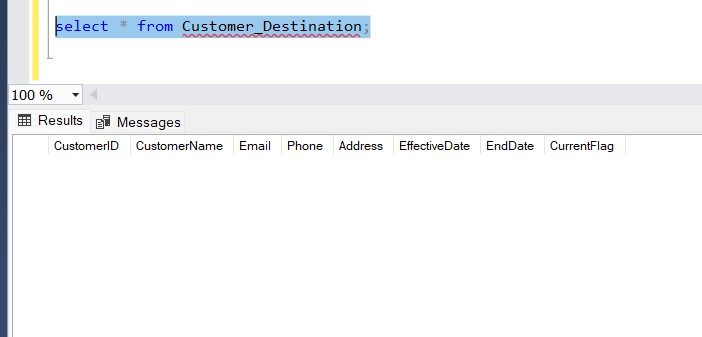

When working with data warehouses, handling Slowly Changing Dimensions (SCD)
and incremental loading
is one of the most common challenges. Recently, I implemented this using SSIS
(SQL Server Integration Services)
and for demonstration, I used a simple customer table example to
illustrate the process step by step.
This blog covers:
- Initial load of data into destination
- Handling SCD Type 1 (overwrite updates for non-historical fields)
- Handling SCD Type 2 (track history with effective dates and current flag)
- Using Row Count Transformation to validate inserted/updated records
Step 1: Source & Destination Setup
I started with a simple Customer table for demonstration:
Source Table: Customer_Source (only business data, no history
tracking)
- CustomerID
- CustomerName
- Email
- Phone
- Address
Destination Table: Customer_Destination (designed for SCD Type 1 &
Type 2)
- CustomerID
- CustomerName
- Email
- Phone
- Address
- EffectiveDate
- EndDate
- CurrentFlag

Step 2: Data Flow Overview
The ETL package follows this flow:
- Extract records from Customer_Source
- Row Count Transformation → Count extracted records
- Lookup Transformation → Match records with Customer_Destination
- Conditional Split → Separate into:
- New Rows (not found in destination)
- Type 1 Updates (non-historical changes → Email/Phone)
- Type 2 Updates (historical changes → Address)
- Load into Destination using OLE DB Command / OLE DB Destination
Step 3: Lookup Transformation
I used a Lookup against the destination to check if a record already exists.
Lookup Query:
SELECT CustomerID, CustomerName, Email, Phone, Address
FROM dbo.Customer_Destination
WHERE CurrentFlag = 1;
Renamed lookup columns with LK_ prefix for clarity.
Step 4: Conditional Split Logic
I defined three outputs based on comparison with lookup values:
New Rows
ISNULL(LK_CustomerID)
Type 1 Updates (Overwrite fields like Email/Phone)
!ISNULL(LK_CustomerID) && (Email != LK_Email || Phone != LK_Phone)
Type 2 Updates (Maintain history for Address)
!ISNULL(LK_CustomerID) && (CustomerName != LK_CustomerName || Address != LK_Address)
Step 5: Handling New Rows
For
new rows, I used a
Derived Column to set history tracking
fields:
- EffectiveDate = GETDATE()
- EndDate = NULL
- CurrentFlag = 1
Then, insert directly into
Customer_Destination.
Step 6: Handling SCD Type 1 Updates
For
Type 1 changes,, I used an
OLE DB Command with the query
UPDATE Customer_Destination SET Email = ?, Phone =? WHERE CustomerID = ? AND CurrentFlag =1
Step 7: Handling SCD Type 2 Updates
For
Type 2 changes,, I performed two steps:
- Expire old record:
UPDATE Customer_Destination
SET EndDate = GETDATE(), CurrentFlag = 0
WHERE CustomerID = ? AND CurrentFlag = 1;
- Insert new record with updated values + Derived Columns
(
EffectiveDate = GETDATE(), EndDate = NULL, CurrentFlag = 1).
Step 8: Testing the Package
Here’s how I tested using the simple Customer example:
- Initial Load → All records inserted as new with
EffectiveDate
set, EndDate NULL, CurrentFlag = 1.
- Update Email/Phone in source → SCD Type 1 worked, old row overwritten.
- Update Address in source → SCD Type 2 worked, old row expired (EndDate
populated, CurrentFlag = 0) and new row inserted.
Final Thoughts
Working with Slowly Changing Dimensions can feel intimidating at first, but once you break it
down step by step, the process becomes much clearer.
In this example, I deliberately kept the customer table simple so the focus stays on the logic
of incremental loading.
The key takeaway is that SSIS gives us the flexibility to handle both Type 1 (overwrite updates)
and Type 2 (historical tracking) in the same package,
depending on business needs. While this demo used a small dataset, the same approach can be
scaled up for larger, real-world scenarios.
If you’re new to SSIS, I’d recommend starting with a small project like this. Once you’re
comfortable with lookup transformations, conditional splits,
and handling row counts, you’ll find yourself much more confident in designing robust ETL
pipelines for production use.